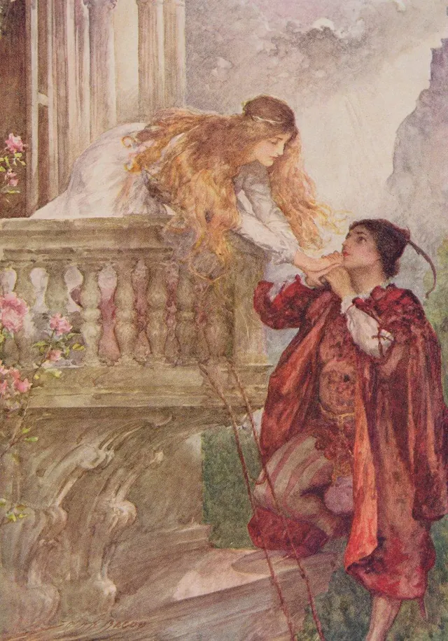

Toutes les anecdotes déjà présentées, rangées par thème. Le rideau est levé sur les coulisses de la mémoire !
Théâtre et art dramatique
Présenté du 2 novembre 2026 jusqu'au 5 novembre 2026
21 octobre 1680
Il y a 346 ans
Ce jour-là, le roi Louis XIV signait l'ordonnance qui donnait naissance à la Comédie-Française. C'est aujourd'hui la plus ancienne troupe de théâtre permanente encore en activité dans le monde.
Façade en pierre claire de la salle Richelieu, à Paris, avec ses colonnes au rez-de-chaussée et ses bannières rouges « Comédie-Française ».Crédit photographique : BnF
60comédiens environ
Plusieurs milliersd'œuvres au répertoire historique
Roméo et Juliette ne se retrouvent pas sur un balcon dans le texte original !
La célèbre scène où Juliette apparaît au-dessus de Roméo est universellement connue comme la « scène du balcon ». Pourtant, dans le texte de Shakespeare, Juliette apparaît à une fenêtre : le mot « balcon » n'est jamais explicitement mentionné. L'image romantique que nous connaissons aujourd'hui doit beaucoup aux adaptations et aux représentations ultérieures de la pièce.

Illustration ancienne de Roméo et Juliette à la fenêtre, peinture romantique ou gravure du XIXe siècle.Crédit image : Roméo et Juliette de « Histoires pour enfants de Shakespeare » par Edith Nesbit (1858-1924) publié par Raphael Tuck et Sons Ltd., Londres.